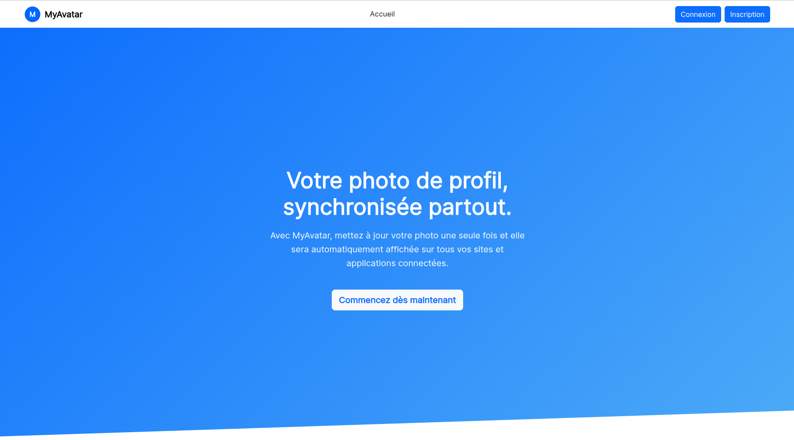
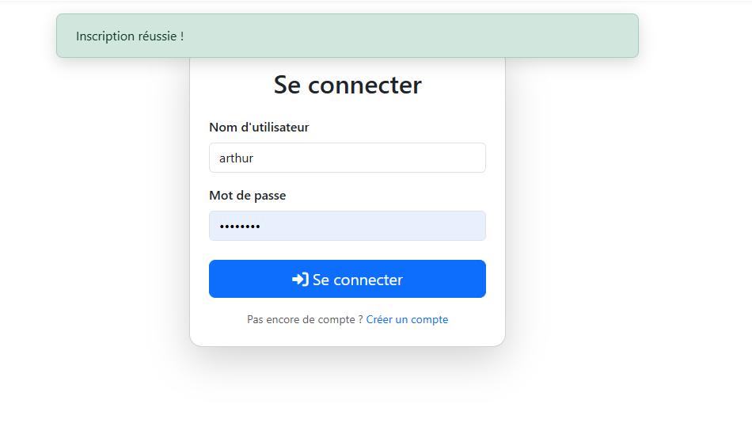
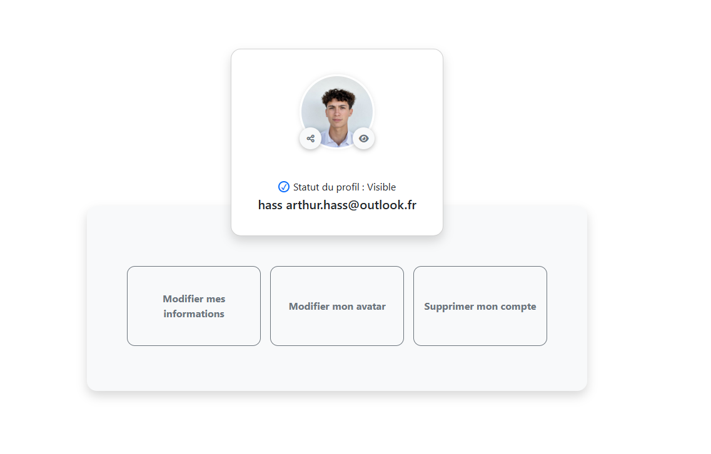
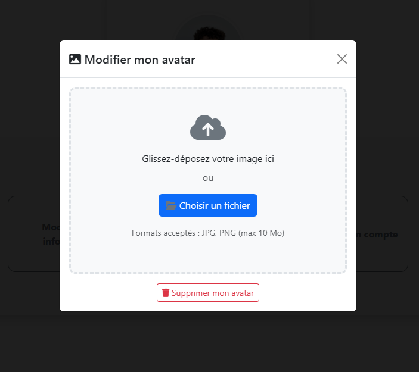
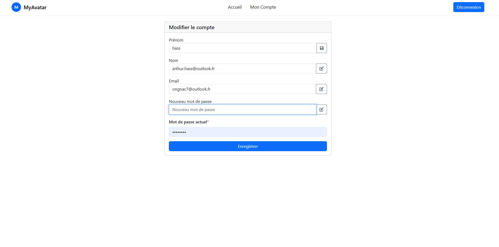
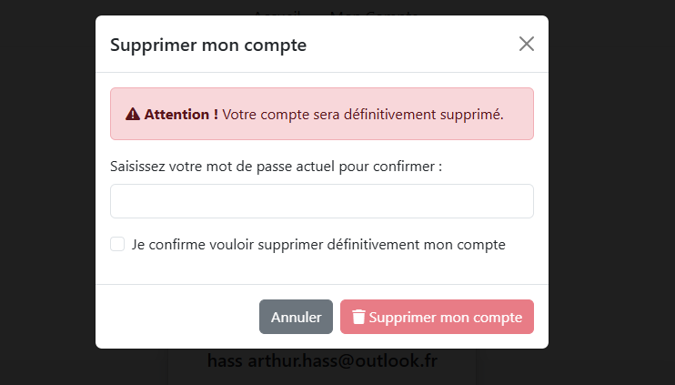

Présentation du projet
Ce projet a été réalisé dans le cadre du BUT Informatique. L'objectif était de développer une application web en Server-Side Rendering avec Symfony et Twig, permettant la gestion d'avatars à la manière du service Gravatar. L'application permet d'associer une photo de profil à une adresse email, accessible via un hash SHA256 de cette adresse.
Fonctionnalités principales
- Inscription et authentification : Création de compte avec login, mot de passe, email et photo de profil optionnelle
- Gestion du profil : Visualisation, modification et suppression de la photo de profil
- Modification du compte : Changement de mot de passe et d'adresse email avec validation
- Vérification en temps réel : Contrôle AJAX de l'unicité du login et de l'email sans rechargement
- Masquage du profil : Possibilité de masquer/démasquer son avatar via un bouton AJAX
- Mode maintenance : Activation via fichier .env redirigeant toutes les pages vers une page de maintenance
- Administration : Page de gestion des utilisateurs pour les administrateurs
- Commandes Symfony : Création et suppression d'utilisateurs via le terminal
Contraintes techniques
- Stockage sécurisé : Les photos de profil ne sont pas stockées dans le dossier public (accessible via contrôleur uniquement)
- BinaryFileResponse : Utilisation de réponses binaires Symfony pour servir les images
- Hash SHA256 : Mise à jour automatique du hash lors de la modification de l'email
- JavaScript natif : Pas de framework JS, uniquement du JavaScript vanilla avec AJAX
- Debouncing : Implémentation d'un système de debounce pour les vérifications en temps réel
- Événements Symfony : Utilisation des événements pour gérer le mode maintenance
Architecture technique
Backend
PHP 8 & Symfony 6
MVCFrontend
Twig, HTML & CSS
JS/AJAXBase de données
MySQL
Outils
Git & Composer
ORMCaptures d'écran

Page d'accueil

Page de connexion

Gestion des avatars

Modification d'avatar

Modification du profil

Suppression d'avatar
Compétences développées
- Développement d'applications web full-stack avec Symfony
- Architecture MVC et moteur de templates Twig
- Gestion de l'authentification et des autorisations
- Manipulation de fichiers et réponses binaires
- Requêtes AJAX et JavaScript asynchrone
- Création de commandes console Symfony
- Gestion d'événements Symfony (EventSubscriber)
- Travail en équipe avec Git et déploiement sur serveur
Accéder au projet
Voir l'application en ligne
×